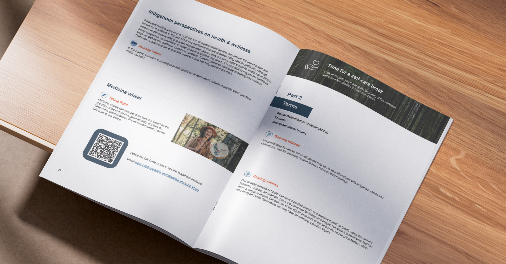
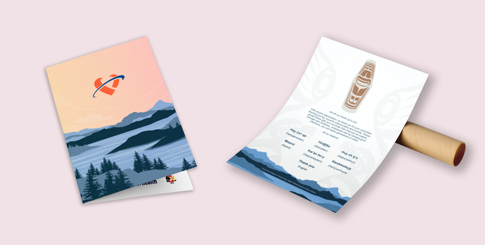
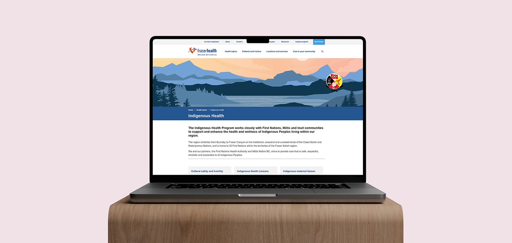

Fraser Health
ICS Course Workbook
ICS Course Workbook

The Workbook
The Indigenous Cultural Safety (ICS) course training workbook is a 76 page workbook designed to aid those who are completing Fraser Health’s online ICS course training. The goal of the course is to education staff on the communities of Indigenous Peoples in Canada. The workbook encourages staff to reflect on what they learned through the course with questions connecting to their own life and links to learn more information.
Contribution
I, with a partner, designed the course workbook. Individually, I designed all of the assisting collateral, including the poster, thank you card, and website banner.
Role
Graphic designer

Assisting Collateral
A poster, thank you card, and website banner were all designed to support the launch of the training course.

